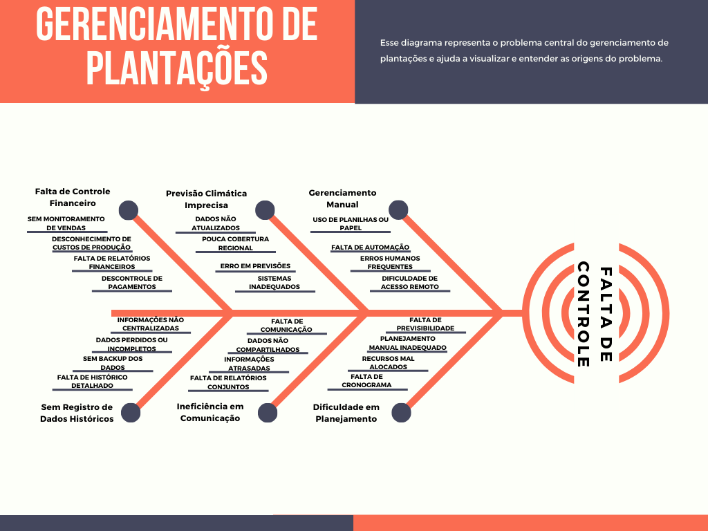
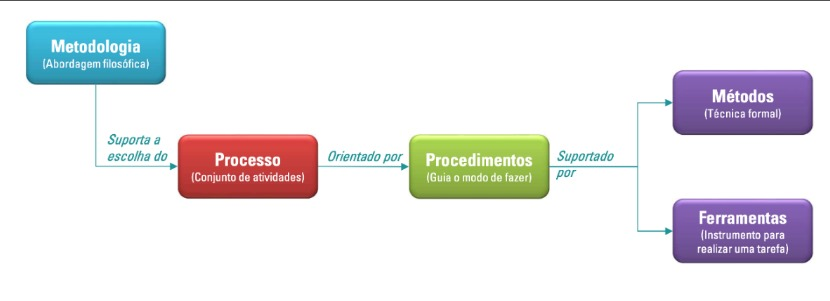

Documento de Visão
Integrantes do Grupo:
| Mat. | Nome | Função (responsabilidade) |
|---|---|---|
| 202016865 | Luis Felipe de Souza Braga | Desenvolvedor |
| 231029725 | Mateus de Sousa Soares | Desenvolvedor |
| 231034073 | Artur Cardoso da Silva | Desenvolvedor |
| 231012100 | Felipe Henrique Oliveira Sousa | Desenvolvedor |
| 231028989 | Joao Pedro Ferreira Moraes | Desenvolvedor |
| 231026616 | Davi Emanuel Ribeiro de Oliveira | Desenvolvedor |
| 202017147 | Thales Germano Vargas Lima | Desenvolvedor |
| 211031593 | Andre Lopes de Sousa | Desenvolvedor |
| 231011972 | Cauã Reis de Freitas | Desenvolvedor |
Histórico de Revisões
| Data | Versão | Descrição | Autor |
|---|---|---|---|
| 27/11/2024 | 1.0 | Primeira versão do documento | Todos Do Grupo |
VISÃO GERAL DO PRODUTO
Problema
Contexto:
Muitos agricultores enfrentam dificuldades no gerenciamento eficaz de suas plantações devido à falta de ferramentas adequadas para monitorar e registrar atividades agrícolas. Além disso, a falta de sistemas de previsão meteorológica afeta negativamente a capacidade dos agricultores se prepararem para condições climáticas adversas, como chuvas intensas, que podem prejudicar certas culturas.
Detalhamento do problema:
-
Falta de Controle e Registro: Agricultores não possuem um histórico completo das atividades agrícolas, incluindo plantio, colheita, adubação e valores de venda.
-
Previsão Meteorológica Inadequada: Não há um sistema eficaz para prever o tempo com antecedência suficiente, o que impede a preparação adequada para condições climáticas adversas.
-
Gestão Financeira Ineficiente: Sem registros detalhados, os agricultores têm dificuldades para calcular os custos e lucros de cada plantação.
-
O diagrama abaixo representa o problema central do gerenciamento de plantações e ajuda a visualizar e entender as origens do problema:

Justificativa:
-
O desenvolvimento dessa aplicação mobile visa solucionar os principais problemas enfrentados pelos agricultores, proporcionando uma ferramenta robusta para o gerenciamento eficaz das plantações, aumentando a produtividade e a lucratividade das operações agrícolas.
-
Essa solução pode contribuir para a resolução do problema por meio da centralização das informações, Previsão climática avançada, gestão financeira eficiente, automatização do processo, comunicação e relatórios.
-
Espera-se que a implementação dessa solução não apenas resolva os problemas de desorganização e falta de controle, mas também otimize os processos agrícolas, contribuindo para o aumento da produtividade e rentabilidade dos pequenos e médios produtores rurais.
Declaração de Posição do Produto
| Item | Descrição | Comentário |
|---|---|---|
| Para: | Agricultores e pequenos produtores rurais. | Foco em um público que carece de ferramentas tecnológicas acessíveis para gerenciar suas plantações de forma eficiente. |
| Necessidade: | Facilitar o gerenciamento completo das plantações, desde o cadastro até a colheita, com previsões climáticas precisas. | A necessidade identificada reflete a falta de controle organizado e de informações meteorológicas confiáveis no dia a dia dos pequenos e médios produtores. |
| O (nome do produto): | É um aplicativo mobile para controle de plantações, gestão financeira e previsão meteorológica. [Nome do Produto] | A proposta do produto é oferecer uma solução centralizada e acessível para a gestão agrícola, usando tecnologia mobile. |
| Que: | Fornece aos agricultores controle total sobre suas plantações, incluindo histórico de plantio, colheita, adubação e notificações de chuvas. | As funcionalidades abrangem todas as etapas do processo agrícola, facilitando a tomada de decisão baseada em dados históricos e previsões. |
| Ao contrário: | Sistemas manuais ou inexistentes, que não fornecem dados centralizados e precisos. | Diferencia-se das práticas tradicionais (como anotações em papel), que são ineficazes para fornecer uma visão integrada da plantação. |
| Nosso produto: | Oferece uma solução integrada, com notificações meteorológicas e relatórios detalhados, diferenciando-se por atender às necessidades específicas de pequenos e médios produtores. | A integração das funcionalidades, especialmente as notificações antecipadas de chuvas, é um diferencial competitivo importante. |
Objetivos do Produto
Melhorar a Gestão das Plantações:
-
Cadastro e Monitoramento: Permitir que os agricultores registrem e monitorem detalhadamente todas as atividades agrícolas, incluindo plantio, adubação e colheita.
-
Histórico de Atividades: Manter um histórico completo e acessível das atividades realizadas nas plantações, visando uma análise futura e melhor tomada de decisões.
Aumentar a Precisão das Previsões Meteorológicas:
-
Notificações Antecipadas: Implementar um sistema de notificações meteorológicas que avise os agricultores, com antecedência mínima de 12 horas, sobre a previsão de chuva ou outras condições climáticas adversas.
-
Preparação para Clima Adverso: Ajudar os agricultores a se prepararem adequadamente para condições climáticas adversas, diminuindo perdas e danos às plantações.
Otimizar a Gestão Financeira:
-
Relatórios Financeiros Detalhados: Fornecer ferramentas para gerar relatórios detalhados sobre custos, receitas e lucros das plantações.
-
Controle de Insumos: Monitorar e registrar o uso de insumos agrícolas, como fertilizantes e pesticidas, para otimizar custos e melhorar a eficiência.
Facilitar a Tomada de Decisões:
-
Análises e Relatórios: Oferecer análises detalhadas e relatórios gerais sobre o desempenho das plantações, permitindo que os agricultores tomem decisões baseadas em dados concretos.
-
Previsão de Produção e Vendas: Ajudar na previsão de produção e planejamento de vendas, com base nos dados históricos e nas tendências atuais.
Tecnologias utilizadas
React Native:
- React Native permite o desenvolvimento de aplicativos móveis para Android e iOS com um único código-fonte, economizando tempo.
- Frontend: Ideal para interfaces de usuário modernas e responsivas.
- Expo: Facilita o desenvolvimento, construção e teste de aplicativos sem necessidade de configuração complexa.
- Context API: Um sistema leve de gerenciamento de estado nativo do React, ideal para projetos pequenos ou médios que não precisam de bibliotecas mais robustas como Redux.
Node.js:
- Node.js é rápido, eficiente e baseado em JavaScript, permitindo o uso de uma única linguagem para backend e frontend.
- Express: Um framework minimalista que acelera o desenvolvimento de APIs RESTful.
- JWT: Garante autenticação segura com tokens, essencial para proteger os dados do usuário.
Design:
- Figma: Ferramenta de design colaborativo, ideal para criar protótipos.
- Canva: Criar gráficos e elementos visuais simples.
Banco de Dados:
- MySQL: Um banco de dados relacional amplamente utilizado e bem documentado, ideal para dados estruturados como informações de usuários, registros de vendas e histórico de atividades agrícolas.
- Firebase (Cloud Firestore): Oferece escalabilidade e sincronização em tempo real, ideal para notificações e atualizações dinâmicas no aplicativo.
APIs:
- AccuWeather ou Weatherstack: APIs confiáveis para previsão do tempo, essenciais para alertar os agricultores sobre mudanças climáticas.
- Google Maps API ou OpenStreetMap: Oferecem recursos de geolocalização e mapeamento, úteis para identificar propriedades e terrenos agrícolas.
- Twilio, OneSignal ou Pusher: Para Notificacoes em tempo real.
Ferramentas De Desenvolvimento:
- Visual Studio Code
- Git e GitHub
- Expo CLI
- Android Studio
Metodologia Ágil:
- SCRUM: Foco na entrega incremental e iterativa, com sprints bem definidos e reuniões de acompanhamento.
- XP: Boas práticas de desenvolvimento, como testes contínuos, código simples e feedback constante.
VISÃO GERAL DO PROJETO
Ciclo de vida do projeto de desenvolvimento de software

Metodologia:
- Usando um ciclo de vida ágil como metodologia para responder bem às frequentes mudanças, realizar entregas rápidas e obter feedbacks constantes do cliente.
- Essa abordagem permite um desenvolvimento centrado no cliente, garantindo a qualidade do produto.
Processo:
- Utilizando Scrum para estruturar e gerenciar o projeto em constante comunicação com o cliente com entregas frequentes para o cliente.
- XP usa feedback rápido e comunicação com alta taxa de disponibilidade para maximizar a entrega de valor, por meio de um cliente no local, uma abordagem de planejamento específica e testes constantes.
Procedimentos:
- Planejamento: Dividir o Product Backlog em tarefas menores e organizá-las por prioridade, usando técnicas como Story Mapping para identificar prioridades.
- Desenvolvimento: Práticas do XP como Programação em pares, com dois desenvolvedores trabalhando juntos no mesmo código. Alem de usar práticas do Scrum como a Integração contínua, verificando constantemente o código para evitar problemas quando adicionado uma nova funcionalidade.
- Entrega e feedback: Liberar releases intermediárias, versões incrementais e obter feedback imediato do cliente para possíveis ajustes.
Métodos:
- Acompanhamento de projeto diretamente com o project owner dando feedbacks sobre aplicação aos desenvolvedores evitando erros de interpretação;
- Verificação e validação conjunto de atividades conduzidas ao longo do ciclo de vida de um projeto de software para garantir a qualidade do produto de software entregue ao final do desenvolvimento;
- Processos formais de entrega para validação rápida e ágil.
Ferramentas:
- React native: front-end;
- Node.js: back-end;
- Canva: design;
- GitHub: controle de versão.